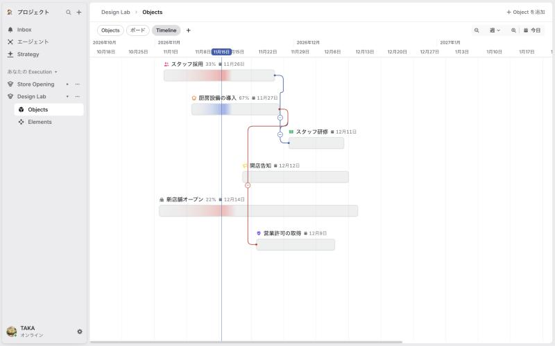
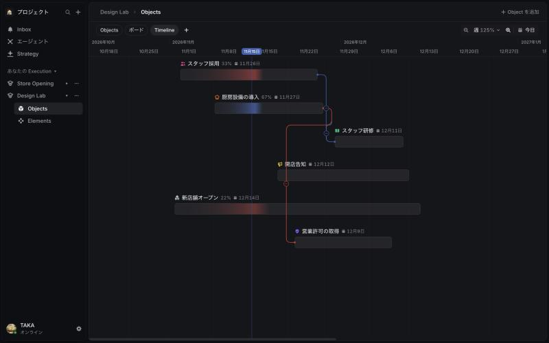

プロジェクトの日程と依存関係を並べ、日程の重なりを赤で示します。
部署ごとのプロジェクトを1本の日程に並べ、そのあいだの依存関係を線で描きます。


タイムラインで確認できること
- 依存関係を線で
- どのプロジェクトが何を待っているかが、一目で分かる。
- ぶつかりは赤で
- 日付が重なる依存だけ、色が変わる。
- 帯ごとに進み具合
- 進捗率と期限が、各プロジェクトの横に並ぶ。
- 週単位で拡大
- 細かく見るときは寄り、四半期を見るときは引く。


日程と進み具合を、同じ画面で確認する
- マイルストーン
- Objectに置いた日付つきの印です。その日までに期限が来るElementのうち、完了した割合に応じて、ひし形が時計回りに塗られます。
- 進み具合の色
- 期日までの残りに対して進み具合が十分なら青、余裕が少なくなると帯の先端から赤、遅れると全体が赤になります。
- 今日の線
- 今日の日付の位置に縦の線を引きます。
- 表示する範囲
- 何か月前から何か月先までを表示するかを、設定で決めます。